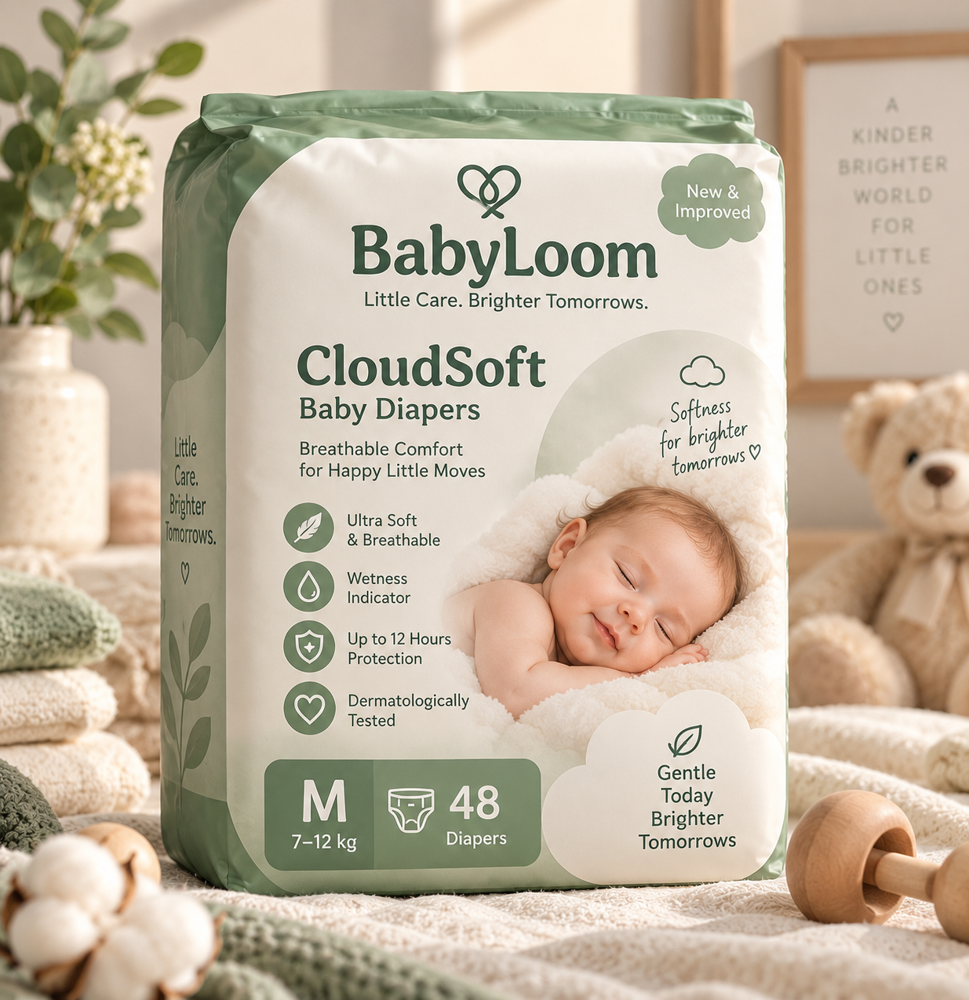

Breathable Comfort
Designed with breathable layers to support everyday comfort against delicate baby skin.

EVERYDAY DIAPERS
Cloud-like comfort designed to keep delicate little skin feeling dry, comfortable and cared for throughout the day.
M · Recommended for 7–12 kg
Breathable Comfort Soft everyday feel
Wetness Indicator Easier change timing
Skin-First Materials Made with little skin in mind
Up to 12-Hour Protection* Day-to-night reassurance
WHY CLOUDSOFT?
Designed with breathable layers to support everyday comfort against delicate baby skin.
A simple visual indicator helps parents know when it may be time for a fresh diaper.
Thoughtful materials and a soft-touch construction designed around sensitive little skin.
Designed to provide dependable protection during naps, playtime and sleepy nights.
FIND THEIR FIT
Every baby grows differently. Use weight as a simple starting point when choosing a BabyLoom size.
GOOD TO KNOW
CloudSoft is conceptually designed with a soft top layer, absorbent core and breathable outer construction for everyday comfort.
Choose the appropriate size based on your baby's weight. Position the diaper comfortably, secure both sides and check that the leg openings sit gently against the skin.
Change diapers regularly and discontinue use if irritation occurs. Keep packaging away from babies and children.
Prototype shipping information: standard delivery and unopened-product returns would be available according to BabyLoom's final commercial policy.
BabyLoom is a conceptual brand created for an academic project. Product performance, dermatological testing, reviews and related claims shown in this prototype are illustrative and would require appropriate testing and substantiation before commercial use.